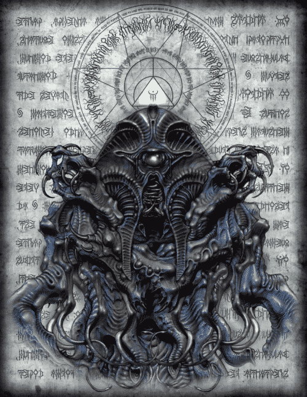

|
|
NYARLATHOTEP

Nyarlathotep, sürünen kaos olarak da bilinir. O, binden fazla farklı forma dönüşebilen kötü bir tanrıdır. Karakter ilk olarak Lovecraft’ın Nyarlathotep adlı şiirinde bulundu. 1920'de yayınlandı ve orijinal Lovecraftian kanonunun bir parçası. Bu, yıllar boyunca yayınlanan birkaç başka hikayede de yer aldı. Bu canavar o kadar korkutucudur ki, tıpkı bir basilisk görüntüsü gibi, bir insanı çıldırtmak için bir bakış yeterlidir. İnsan kılığına büründüğünde Mısır Firavununa dönüşür. İnsanlığın himayesi altında, bu uğursuz adam, kaygan dili ve bir cümle dönüşüyle takipçilerinin arasında sallanıyor.
|